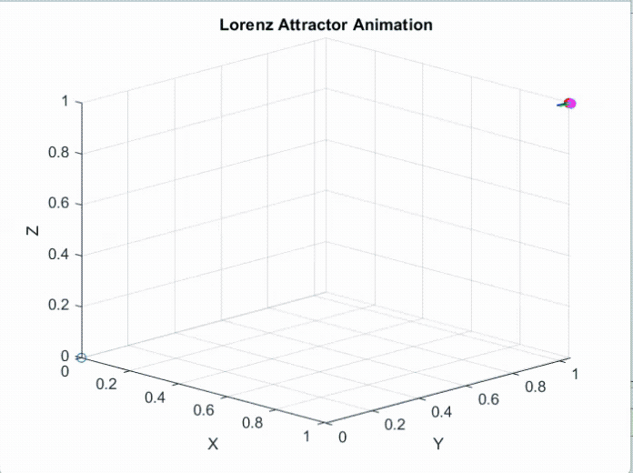

The Lorenz equations are a set of three coupled, nonlinear first-order differential equations that represent a simplified model of atmospheric convection. The are famous for demonstrating deterministic chaos, where small changes in initial conditions produce very different results.
Below is an animation I made which shows the initial points (1, 1, 1) and (1.01, 1, 1) and their solution, using ode45. Initially, the paths stay similar, but at a certain point, they diverge completely.

The Lorenz equations are a simplification of the Navier-Stokes equations, but they can also be derived from a chaotic water wheel. After doing the derivation, I looked into the critical points and their stability. By changing the value of the variable 'r', the eigenvalue, and thus the stability of each critical point would change. I explored different r values and plotted different critical points with different eigenvalues, noting that the positive eigenvalues created unstable behavior while the negative eigenvalues made the solution path go towards the critical point.
Below is the presentation I presented to explain to my classmates the work I did. It includes relevant formulas, a more mathematical explanation, and more graphs.